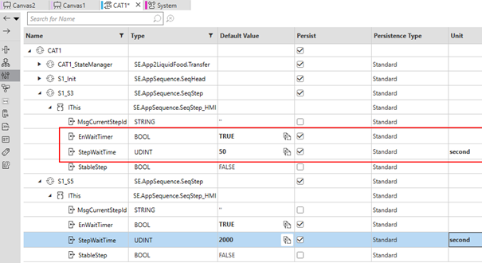
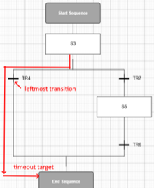
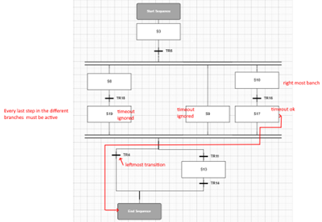

In order to limit the time where a particular step is active (and avoid locked active state), the persistent tab of the procedural CAT shows all created steps, allowing for each of them to set a time duration.

|
Parameter |
Value |
Description |
|---|---|---|
|
EnWaitTimer |
TRUE / FALSE |
Enable (TRUE) or disable (FALSE) the timer. |
|
StepWaitTime |
Seconds |
When the EnWaitTimer is TRUE, the step will be active for a Maximum of x seconds. Even if the transitions conditions are not valid the graph will move to the next step. When EnWaitTimer is FALSE, this parameter is ignored and no timer is used. |
What is the next step after a timeout ? It is always the leftmost transition target.
Simple use case: a step followed by some transitions. The timeout destination is the step that follows the leftmost transition.

Special case: the last steps in the parallel branch: only the rightmost branch handles a timeout.
